色は oklch() で定義し、派生させた色は元の色から関数で作ります。そのうえで、ブラウザやユーザーの設定によって色が置き換わる場面まで想定しておきます。
色の書き方は大きく変わりました。16進数で色を管理していた頃は、透過させた色のためにRGBの値を別のトークンとして持ち、背景色ごとに文字色の組み合わせを決めていました。いまは、相対カラー構文と color-mix() で元の色から派生させた色を作れ、sign() を組み合わせれば、背景色から文字色を黒か白に決められます。ダークモードも light-dark() を使えば、トークンの側だけで切り替えられます。
色は見た目だけの問題に見えますが、アクセシビリティに直結します。強制カラーモードでは、background-color で描いたアイコンが消え、背景色だけで範囲を示していたボタンはただの文字になります。Windowsのユーザーの約4%が強制カラーモードを使っているというデータもあり、無視できる数ではありません。色の違いだけで伝えた情報は、色の見え方が違う人には伝わらないので、実装後にはグレースケールの表示でも確かめます。
この章を読むと、透過させた色や明度を変えた色が要るときに、トークンを増やさず、相対カラー構文と color-mix() のどちらで元の色から作るかを決められます。背景色に合わせて文字色を黒か白にする場面では、contrast-color() と、相対カラー構文と sign() の組み合わせのどちらを使うかを、対応するブラウザと、色を自分で決めたいかどうかから選べます。ダークモードや強制カラーモードで色が置き換わったときに、どの部品の情報が伝わらなくなるかも、実装する前に見積もれます。
この章は次の5つの節で構成しています。
rgb()、hsl()、oklch() の違いと、広色域の色空間、グラデーションの補間の色空間color-mix() の使い分けcontrast-color() で文字色を黒か白に決める方法、WCAG 2.xとAPCAで判定が分かれる色、Safari 18系に対応するときや色を自分で決めるときの相対カラー構文と sign()light-dark() のトークン、メタ要素の color-scheme、テーマの手動での切り替え色の関数をスペースで区切る記法は第9章「記法の規約」（巻2）で、色のトークンをプリミティブとセマンティクスの2層で持つ設計は第10章「コンポーネントとカスタムプロパティ」（巻2）で扱います※1。画像、アイコン、影、角の形は、第16章「画像・装飾」で扱います。この章のコード例では @layer の記述を省略していますが、デモのCSSには省略せずに書いています。
初めて読むときは、「15-1 色の形式と色空間」を読みます。15-2以降の派生色、文字色の選び方、ダークモード、強制カラーモードは、配色を設計するときに読んでください。
次のルールを先に押さえ、ほかのルールは、該当する場面で付録A「ルール一覧（巻3）」から引けば足ります。
text-contrast-aa：文字と背景のコントラスト比は、WCAG 2.1のAAを満たします。no-color-only-information：本文の中のリンク、フォーカスやホバーの状態、入力エラーを、色の違いだけで伝えません。transparent-border-over-none：枠線を消すときは、border: none ではなく border-color: transparent で透明にします。derive-colors-from-base：透過させた色や明度を変えた色は元の色から作り、そのためのトークンやRGBの値を別に用意しません。light-dark-in-semantic-tokens：ダークモードの色はセマンティクスのトークンに light-dark() で持たせ、コンポーネントにメディアクエリを書きません。ここまでで、色の定義と、設定によって色が置き換わる場面への備えが決まりました。画像やアイコン、影、角の形といった装飾は、この色を使って描くうえに、画像が表示されない場合や新しい図形の機能に未対応の環境でも、内容と部品の形を保つ必要があります※2。
色は oklch() で定義します。oklch() は明度、彩度、色相の3つの値で色を表し、明度が見た目の明るさに近くなるように作られています。値から色の性質を読み取れ、色相を変えても明度をそろえれば同じくらいの明るさに見えるので、段階的なパレットを組み立てやすくなります。
16進数、rgb()、hsl() は、どれもsRGBという色空間の色を表す書き方です。sRGBの外にある、広色域の画面でしか表示できない鮮やかな色は表せません。グラデーションも、どの色空間で中間の色を作るかによって見え方が変わるので、補間の色空間を書きます。
Baseline広く利用可能2025年11月から（新しく利用可能になったのは2023年5月）
oklch() と oklab()
web-features 3.40.0 のデータ（2026年9月確認）
16進数の #e4a153（rgb(228 161 83) と同じ色）は、赤、緑、青の3つのチャンネルの強さを、それぞれ0から255までの値で書いたものです。値を見ても、どのくらい明るい色なのか、どの色相に近いのかは読み取れません。各チャンネルの値はガンマで符号化されていて、光の量にも、見た目の明るさにも比例しないからです。デザインの調整で「もう少し暗く」と頼まれても、3つの値をどう変えればよいかが分からず、カラーピッカーで選び直すことになります。
hsl() は、色相、彩度、明度で色を表します。色相を色相環の角度で、彩度と明度を割合で書くので、16進数より直感的に扱えます。しかし、HSLの明度は、人の目に見える明るさと一致しません。同じ明度50%でも、黄色は明るく、青は暗く見えます。色相だけを変えて段階をそろえたつもりでも、明るさがばらつきます。
デザインツールから受け取る値にも注意が要ります。多くのデザインツールは、HSLではなくHSB（色相、彩度、明るさ）で色を表示します。HSBの明るさとHSLの明度は別の尺度なので、数値をそのまま hsl() に書き写すと、違う色になります。
このほかに、white のような色の名前と、#00000080 のような不透明度付きの16進数もあります。本書のStylelintの設定では、どちらも禁止しています※1。
oklch() は、明度（L）、彩度（C）、色相（H）の3つの値で色を表します。明度は0%から100%、彩度は0から始まる数値、色相は角度です。明度が見た目の明るさに近くなるように設計されているので、色相が違っても、明度が同じならおおむね同じ明るさに見えます。
:root {
--color--neutral--100: oklch(97% 0 0deg);
--color--neutral--500: oklch(55.6% 0 0deg);
--color--neutral--900: oklch(20.5% 0 0deg);
--color--accent--300: oklch(80% 0.1 250deg);
--color--accent--500: oklch(60% 0.16 250deg);
--color--accent--700: oklch(45% 0.14 250deg);
}私のテンプレートでは、グレーとアクセントカラーを、それぞれ50から950までの11段階で定義しています。グレーは彩度を0にして、明度だけを変えています。アクセントカラーは色相を250deg（青）に固定し、中間の段階ほど彩度が高くなるように、山なりに値を変えています。
oklch() を選ぶいちばんの理由は、値がそのまま色の性質を表していることです。#c9853a という値を見ても、元の色より暗いのかどうかは分かりません。oklch(52% 0.16 250deg) なら明度52%の青だと読み取れ、「もう少し明るく」という調整も明度の数値を上げるだけです。
似た書き方に lch() があります。lch() はCIE Labという色空間をもとにしていますが、青の領域では、彩度や明度を変えると色相が紫の側にずれる問題が知られています。oklch() のもとになったOklabは、この問題を改善する目的で2020年に作られた色空間です。本書は lch() ではなく oklch() を使います。
色の関数をスペースで区切ることや、色相に deg を付けることは、「9-7 モダンな記法にそろえる（巻2）」で説明しています※2。
色空間は、画面で表せる色の範囲と、その中の色の表し方を決めたものです。ウェブで長く使われてきたsRGBは、人の目に見える色のうち、一部しか表せません。最近のスマートフォンやノートパソコンの多くは、Display P3という、sRGBより広い色空間の色を表示できます。
16進数、rgb()、hsl() は、sRGBの色しか表せません。値の上限がsRGBの範囲に合わせて決まっているからです。広色域の画面でも、これらで書いた色はsRGBの範囲を超えません。
oklch() の彩度には上限がないので、sRGBの外の色も書けます。同じ値でも、広色域の画面ではより鮮やかに表示され、sRGBの画面ではブラウザが表示できる色に置き換えて描画します。Display P3の色空間の値を直接書くときは、color(display-p3 1 0.5 0) のように color() 関数を使います。color() の各チャンネルは、0から255ではなく0から1の数値で書きます。
Baseline広く利用可能2025年11月から（新しく利用可能になったのは2023年5月）
color()
web-features 3.40.0 のデータ（2026年9月確認）
表示できる範囲を超えた色は、ブラウザが近い色に置き換えます。この置き換えをガマットマッピングといいます。置き換えたあとの色はブラウザが決めるので、デザインツールで見た色と画面の色が違って見えることがあります。デザインツールから受け取った色を oklch() に変換したら、彩度が上がりすぎていないかを確かめます。sRGBを超える彩度を使うかどうかは、デザイナーと合意して決めます。
グラデーションの途中の色は、2色のあいだを補間して作られます。補間の色空間を書かないときに使われる色空間は、色の書き方で決まります。#rrggbb や rgb()、hsl() のような旧来の書き方の色だけをつなぐと、互換性のためにsRGBのチャンネルごとに補間され、彩度の高い2色の中間が灰色にくすみます。oklch() などの新しい書き方の色を含むと、既定の色空間はOklabになります。
本書では、色の書き方にかかわらず、in oklch のように補間の色空間を書きます。既定に任せると、色の書き方を変えただけで中間の色が変わり、どの補間を意図したのかがコードから読み取れないからです。oklch で補間すると、知覚に近い明度、彩度、色相で中間の色が作られます。黄色と青のように色相が離れた2色でも、中間が灰色にくすみません。
._hero {
background-image: linear-gradient(in oklch, oklch(85% 0.17 95deg), oklch(55% 0.2 260deg));
background-color: oklch(85% 0.17 95deg);
}次のデモでは、同じ黄色と青を、3つの色空間で補間しています。1本目の in srgb は、16進数や rgb() の色だけをつないだときの既定と同じ補間です。
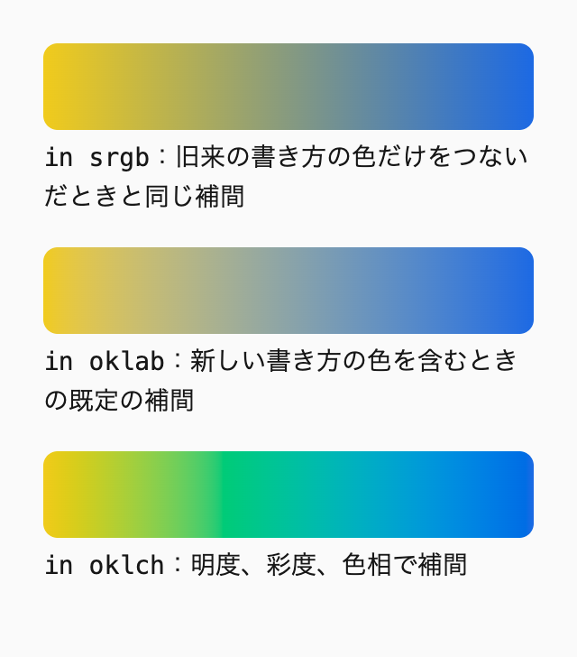
幅 320px
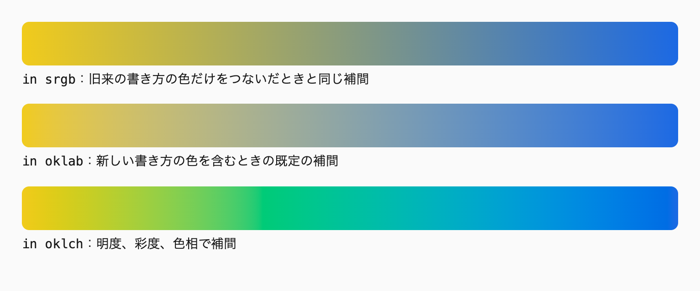
幅 768px
in srgb の帯は、中央が灰色に近くなります。sRGBでは赤、緑、青のチャンネルを別々に補間するので、黄色と青の中間で3つのチャンネルが近い値になり、彩度が失われるからです。in oklab では中央のくすみが和らぎ、in oklch では色相環を回るので、緑を通って彩度を保ったまま青に変わります。
デモの3本は、どれも oklch() で書いた同じ2色をつないでいます。色の書き方は同じでも、補間の色空間を変えると中間の色も変わります。
oklch のような極座標の色空間では、色相の補間の経路が2通りあります。shorter hue が初期値で、色相環の短いほうを通ります。長いほうを通したいときは in oklch longer hue と書きます。color-mix() で使う oklab は、色相ではなく明度と2つの色の軸で補間するので、色相の経路を選ぶ必要がありません。ただし、色相が離れた2色では、中間の彩度が下がることもあります。グラデーションには彩度を保ちやすい oklch を勧めます。中間のくすみを気にしない組み合わせなら、oklab でも構いません。
色空間の指定に対応していないブラウザは、in oklch を書いた background-image の宣言を丸ごと無視します。上のコード例のように background-color を用意しておけば、背景が何も表示されない状態を避けられます。
Baseline新しく利用可能2024年6月から
Gradient interpolation
web-features 3.40.0 のデータ（2026年9月確認）
oklch() の彩度の上限は、色相と明度によって変わります。明度が0%や100%に近い色は、彩度を上げても鮮やかになりません。範囲を超えた値を書いてもエラーにはならず、ブラウザが表示できる色に置き換えるだけなので、値が範囲内かどうかはコードからは分かりません。カラーピッカーなどのツールで、sRGBとDisplay P3の範囲を確かめながら値を決めます。
既存のサイトで16進数の色を使っているなら、トークンの定義から oklch() に書き換えます。値の変換はツールで行い、変換した値の小数点以下は、見た目が変わらない範囲で丸めます。コンポーネントに直接書かれた16進数の色も、セマンティクスのトークンに置き換えます。
この節で扱ったのは、色そのものの書き方です※3。
推奨色のトークンと色の値は、oklch() で定義する。
oklch-for-colors
推奨彩度の高い2色以上をつなぐグラデーションには、linear-gradient(in oklch, …) のように補間の色空間を書く。
gradient-interpolation-space
hsl() を挙げています）oklch を使います）透過させた色や明度を変えた色は、元の色から作ります。1つの色の不透明度や明度だけを変えるときは、oklch(from var(--color) l c h / 10%) のような相対カラー構文で書きます。背景色と文字色の中間のように、2つの色の間の色は color-mix() で作ります。
派生させた色のために、トークンやRGBの値を別に用意する必要はありません。元の色を1か所直せば、そこから作った色もすべて追従し、元の色との関係もコードに残ります。
Baseline新しく利用可能2024年9月から
相対カラー構文
web-features 3.40.0 のデータ（2026年9月確認）
色を16進数で指定してトークンにまとめたCSSを考えます。ボタンの背景を少し透過させたいときや、少し暗い色がほしいときに困ります。16進数のトークンからは不透明度を変えられないので、RGBの値を別のトークンとして用意することになります。
/* 🙅♂ Not Recommended */
:root {
--color-primary: #e4a153;
--color-primary-rgb: 228 161 83;
--color-primary-dark: #c9853a;
}
.button--ghost {
background-color: rgb(var(--color-primary-rgb) / 20%);
}
.button--strong {
background-color: var(--color-primary-dark);
}このコードでは、1つの色を表すトークンが3つあります。ブランドの色を変えるときは3つとも書き換える必要があり、1つでも直し忘れると、元の色と派生させた色がずれます。--color-primary-dark のような「少し暗い色」は誰かが目で見て選んだ値で、元の色との関係がコードに残っていません。
ホバー、無効、選択中のように状態が増えるたびに、同じことが起きます。状態ごとに「少し暗い色」「少し薄い色」を足していくと、トークンの数は元の色の数の何倍にもなります。かつてはSassの darken() や rgba() で作っていた色ですが、いまはCSSだけで、元の色から作れます。
相対カラー構文は、元の色を成分に分け、一部だけを書き換えた色を作る構文です。oklch(from 元の色 l c h) と書くと、元の色を分解した明度・彩度・色相の値が l、c、h に入ります。変えたい値だけを書き換えれば、ほかの値は元の色のままです。
._divider {
border-block-end: 1px solid oklch(from var(--background--accent) l c h / 10%);
}
._tag {
background-color: oklch(from var(--background--accent) calc(l - 0.15) c h);
}1つ目は、アクセントカラーの不透明度を10%にした区切り線です。2つ目は、明度だけを0.15下げた、少し暗いアクセントカラーです。どちらも元の色のトークンを参照しているので、アクセントカラーを変えれば、区切り線とタグの色も一緒に変わります。元の色には、色の段階（--color--accent--500 のようなプリミティブ）ではなく、役割を表すセマンティクスのトークンを使います。ダークモードで値が切り替わっても、派生させた色が同じ役割のまま追従するからです※1。
元の色の書き方は問いません。16進数のトークンでも、oklch(from #e4a153 l c h / 20%) と書けば、ブラウザが oklch() の成分に変換してから書き換えます。相対カラー構文は rgb() や hsl() でも使えますが、本書では oklch() にそろえます。HSLの明度は見た目の明るさと一致しないので、calc(l - 10) で暗くしても、色相によって暗くなり方が変わるからです。
相対カラー構文の中の l は、パーセントではなく0から1までの数値として扱われます。計算するときは、calc(l - 0.15) のように数値で書きます（2026年9月、Chrome 153で確認）。Safariが対応したのはバージョン18なので、本書の対象のブラウザ（Safari 18系の最終版以降）では問題なく使えます（2026年9月確認）。
相対カラー構文を使うと、ホバーや無効の状態の色も、元の色から作れます。成分の書き換え方は、変えたい性質で決まります。暗くするなら l を下げ、くすませるなら c を下げ、半透明にするなら不透明度を指定します。
@scope (.scoped.button) to (.scoped) {
:scope {
--_accent: var(--button--accent, var(--background--accent));
--_background: var(--_accent);
border-color: transparent;
background-color: var(--_background);
color: oklch(100% 0 0deg);
&:focus-visible {
--_background: oklch(from var(--_accent) calc(l - 0.1) c h);
}
&:disabled {
--_background: oklch(from var(--_accent) calc(l + 0.2) 0 h);
}
}
}フォーカスしたときは明度だけを0.1下げ、無効のときは明度を上げて彩度を0にしています。どの状態も --_accent から作っているので、公開プロパティの --button--accent で元の色を変えれば、状態ごとの色も一緒に変わります※2。
次のデモでは、3枚のカードの元の色だけを変えています。背景、枠線、バッジの色は、それぞれのカードの元の色から相対カラー構文で作っています。
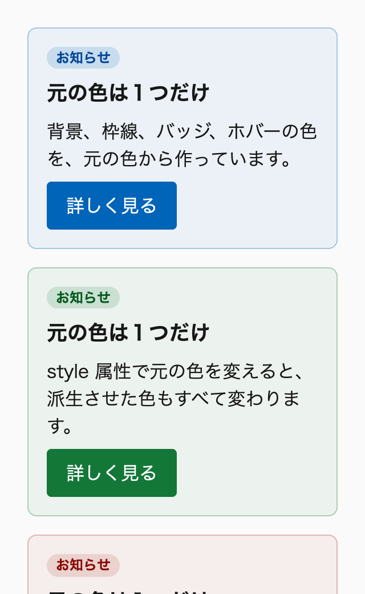
幅 320px（上の部分）
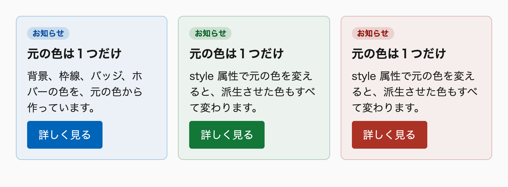
幅 768px
カードの背景は元の色の不透明度を6%に、枠線は30%に、バッジの背景は15%にしています。ボタンにマウスを重ねるか、Tabキーでフォーカスを移すと、明度を0.1下げた色に変わります。2枚目と3枚目は、style 属性で --derived-card--accent を渡しているだけで、CSSの側には色ごとのルールがありません。
相対カラー構文は、元の色の色相を回すこともできます。oklch(from var(--background--accent) l c calc(h + 180)) は、明度と彩度を保ったまま、色相環の反対側の色を作ります。ただし、こうして作った色がデザインで使えるかどうかは別の問題です。配色のための色は、デザインで決めたトークンから選びます。
不透明度だけを変える場合は、alpha() 関数でも書けます。alpha(from var(--background--accent) / 10%) は oklch(from var(--background--accent) l c h / 10%) と同じ色です。成分をそのまま並べる l c h を省けます。相対カラー構文の結果は oklch() の色空間になりますが、alpha() の結果は元の色の色空間のままです（2026年10月、Chrome 152で確認）。
alpha() が主要なブラウザで使えるようになったのは2026年9月で、Safariは27から対応しています。本書の対象のブラウザでは使えないので、当面は相対カラー構文で書きます（2026年10月確認）。
Baseline新しく利用可能2026年9月から
alpha()
web-features 3.40.0 のデータ（2026年9月確認）
color-mix() は、2つの色を指定した割合で混ぜる関数です。相対カラー構文が1つの色の成分を書き換えるのに対して、color-mix() は2つの色の間の色を作ります。背景色と文字色を少しだけ混ぜた枠線や、currentColor を半透明にした下線のように、2つの色の関係で決まる色に向いています。
._card {
border: 1px solid color-mix(in oklab, var(--background--base), var(--foreground--base) 15%);
}
._more-link {
text-decoration-color: color-mix(in oklab, currentColor 60%, transparent);
}1つ目は、背景色に文字色を15%混ぜた枠線の色です。ライトモードでは背景より少し暗く、ダークモードでは少し明るい線になり、どちらの配色でも背景からわずかに浮きます。2つ目は、文字色に透明を混ぜて、不透明度を60%にした下線の色です。currentColor の不透明度を変えたいときも、transparent と混ぜれば簡単に書けます。
補間の色空間には oklab を指定します。以前の私は in srgb と書いていましたが、いまのテンプレートでは in oklab にそろえています。srgb で混ぜると、中間の色がくすんで見えることがあります。補間の色空間による違いは「15-1 色の形式と色空間」のグラデーションの例で確かめられます。
ホバーのときに背景色を少し暗くしたい場合も、opacity を下げるのではなく、色そのものを変えます。opacity を下げると、文字まで一緒に透けてしまうからです。
Baseline広く利用可能2025年11月から（新しく利用可能になったのは2023年5月）
color-mix()
web-features 3.40.0 のデータ（2026年9月確認）
同じ色をどちらでも作れる場面は多くあります。不透明度が10%の色なら、oklch(from X l c h / 10%) と color-mix(in oklab, X 10%, transparent) のどちらの書き方でも作れます。黒を10%混ぜて暗くする書き方と、明度を下げる書き方も、近い色になります。
私は、1つの色の成分を変えるときは相対カラー構文を、2つの色の間を取るときは color-mix() を使います。「アクセントカラーの薄い版」は元の色が1つなので相対カラー構文で、「背景と文字の中間」は2つの色が要るので color-mix() で書きます。使い分けを決めておくと、コードを読むときに、その色が1つの色から作ったものか、2つの色の間を取ったものかが書き方から分かります。
相対カラー構文は、変える成分を名前で書けることも利点です。calc(l - 0.1) なら明度を下げたことが、/ 10% なら不透明度を変えたことが読み取れます。color-mix() で黒を混ぜると、明度と一緒に彩度も下がるので、意図が「暗くする」なのか「くすませる」なのかが書き方から分かりません。
contrast-color() と color-mix() を組み合わせると、1つの色からコンポーネントの配色をまとめて作れます。保存の完了や失敗を知らせるトーストを例にします。トーストに渡すのは文字色だけで、枠線と背景の色は文字色から作ります。
枠線の色は currentColor にして、文字色と同じにします。背景の色は、文字色と、文字色に対比する白か黒を color-mix() で混ぜ、文字色を10%だけ残した色にします。対比する白か黒は contrast-color(var(--_foreground)) で作ります※3。ここでは向きを逆にして、文字色から背景の色を選んでいます。Safari 18系に対応するときは、15-3と同じく oklch(from var(--_foreground) sign(0.7 - l) 0 h) に置き換えます。
@scope (.scoped.toast) to (.scoped) {
:scope {
--_foreground: var(--toast--foreground, oklch(45% 0.12 250deg));
--_contrast: contrast-color(var(--_foreground));
padding: 16px;
border: 1px solid currentColor;
border-radius: 4px;
background-color: color-mix(in oklab, var(--_foreground), var(--_contrast) 90%);
color: var(--_foreground);
&[data-variant="success"] {
--_foreground: oklch(45% 0.12 150deg);
}
&[data-variant="error"] {
--_foreground: oklch(48% 0.15 25deg);
}
}
}文字色が濃ければ、背景は白寄りの淡い色になります。文字色が明るければ対比色は黒になり、背景は黒寄りの暗い色になります。どちらの場合も、背景の明度は文字色から離れる向きに決まります。
成功や失敗のような種類は、data-variant 属性のセレクタで内部プロパティの --_foreground を書き換えます。種類にない色を使いたいときは、style 属性で公開プロパティの --toast--foreground を渡します。どちらの場合も書き換えるのは文字色の1つだけで、枠線と背景の色を種類ごとに書く必要はありません。なお、data-variant 属性を付けた要素では、種類の色が公開プロパティより優先されます。種類の宣言が --_foreground を上書きするからです。
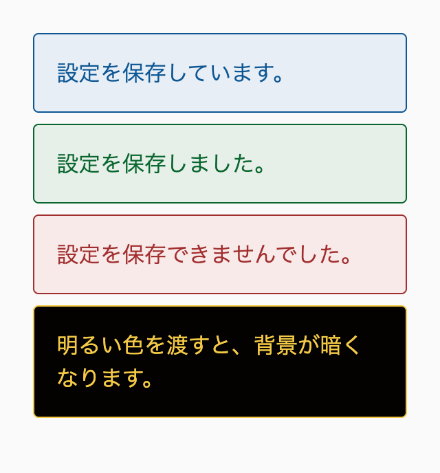
幅 320px
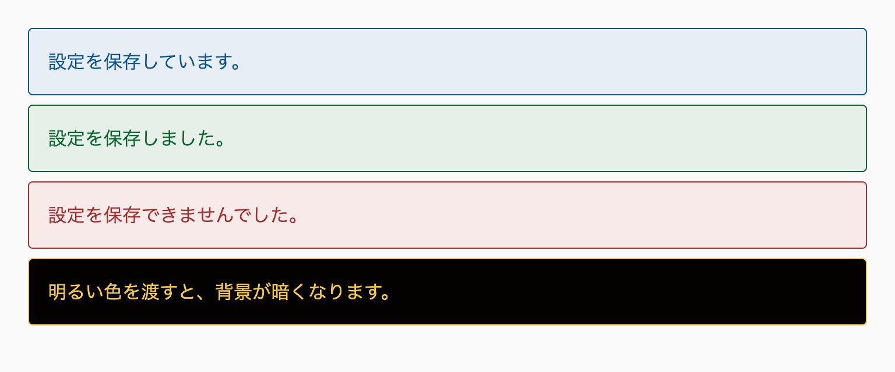
幅 768px
1つ目は既定の色、2つ目と3つ目は data-variant 属性で種類を選んだトーストです。4つ目は style 属性で明るい黄色を渡した例で、対比色が黒に変わり、背景が暗くなります。
背景の色を文字色から作るので、文字色を変えるとコントラスト比も変わります。デモの濃い3色は、文字色と背景のコントラスト比が計算上およそ6:1で、WCAGのAAの基準（4.5:1）を満たします。一方、中間の明度の色を渡すと、contrast-color() の選ぶ白か黒は、見た目の読みやすさと食い違うことがあります（15-3の明度0.57の青の例）。contrast-color() に未対応の環境（Safari 26より前）では、--_contrast は値を保持しますが、それを参照する background-color が計算値の段階で無効になり、背景は付きません。文字色と枠線は残りますが、読めるかどうかはページの背景で決まります。明るい黄色の文字は明るいページの上で読みにくくなります。Safari 18系に対応するときは、--_contrast を sign() で書き、背景を必ず付けます。種類の色を決めるときと、公開プロパティで色を渡すときは、文字色と背景の組み合わせでコントラスト比を確かめます。
明度を上げ下げした色は、元の色によっては画面で表示できる範囲を外れます。彩度の高い色の明度を大きく上げると、その明度では表せない彩度になり、ブラウザが近い色に置き換えます。明度を大きく変えるときは、元の色の段階のトークン（--color--accent--300 など）を使うほうが、デザインどおりの色になります。
半透明の色は、下にある色と重なって見えます。背景が白なら淡い色に見えますが、画像や別の色の上では違う色に見えます。文字の背景に半透明の色を使うときは、重ねる背景ごとにコントラスト比を確かめます※4。
相対カラー構文とカスタムプロパティを組み合わせると、どの色から作ったのかが変数の名前からしか分からなくなります。私は、状態ごとの色を --_accent--hocus のような名前の内部プロパティにまとめ、元の色と同じ場所に書いています※5。
推奨透過させた色や明度を変えた色は元の色から作り、そのためのトークンや RGB の値を別に用意しない。
derive-colors-from-base
推奨1つの色の不透明度や明度だけを変えるときは、oklch(from var(--color) l c h / 10%) のような相対カラー構文で書く。
relative-color-for-single-color
推奨2つの色の間の色は color-mix() で作り、補間の色空間には oklab を指定する。
color-mix-for-two-colors
推奨種類ごとに色が変わるコンポーネントは、元の色1つを内部プロパティで差し替え、枠線は currentColor、背景は元の色と contrast-color() で作った対比色を color-mix() で混ぜて作る。
variant-palette-from-one-color
hsl() と rgb() の例も挙げていますが、本書は oklch() で書きます）color-mix() の補間の色空間などが本書と異なります）color-mix() で作る例）color-mix() でトーストの枠線と背景の色を作る例）背景色から文字色を黒か白に決めるときは、color: contrast-color(var(--_background)); と書きます。contrast-color() は、渡した色に対してブラウザが黒か白を選んで返す関数です。Safariが対応したのはバージョン26からなので、この書き方を使うのは、対象の環境がSafari 26以上の場合です。また、不透明で、選ばれる文字色とのコントラスト比を確認済みの背景色に使います。
Safari 18系にも対応する場合や、切り替える明度や色を自分で決めたい場合は、相対カラー構文と sign() で書きます。式は color: oklch(from var(--_background) sign(0.7 - l) 0 h); です。背景の明度が0.7より低ければ白に、0.7以上なら黒になります。画像の上の文字に敷く、画像が表示されなかったときの背景色は、文字色から決めます。まず sign() で書き、contrast-color(currentColor) に対応する環境ではそれで上書きします。
Baseline新しく利用可能2026年4月から
contrast-color()
web-features 3.40.0 のデータ（2026年9月確認）
ボタンやバッジのように、色のバリエーションを持つ部品を考えます。バリエーションを足すたびに、背景色と文字色の組み合わせを1つずつ決めることになります。
/* 🙅♂ Not Recommended */
._badge {
&[data-variant="info"] {
background-color: var(--color--accent--600);
color: oklch(100% 0 0deg);
}
&[data-variant="warning"] {
background-color: var(--color--warning--400);
color: oklch(0% 0 0deg);
}
}このコードでは、背景色を変えるたびに文字色も見直す必要があります。--color--warning--400 を少し暗い段階に替えたら、黒い文字のままでよいのか、白にすべきかを、誰かが判断しなければなりません。ダークモードで背景色の段階が替わる場合も同じで、配色ごとに文字色の組み合わせが増えます。
背景色がCSSの外から来る場合は、さらに困ります。CMSで編集者がラベルの色を選べる場合、選べる色を確認済みの候補に限っていても、どの候補が使われるかはCSSを書く時点では分かりません。この節で扱うのは、コントラスト比を確認済みの限られた背景色について、文字色を背景色から自動で決める書き方です。どのような色が来ても読みやすさを保証する方法ではありません。
contrast-color() は、色を1つ受け取り、その色に対してブラウザが選んだ黒か白を返す関数です。背景色を渡せば、その上に置く文字色が決まります。
@scope (.scoped.badge) to (.scoped) {
:scope {
--_background: var(--badge--background, var(--color--accent--600));
background-color: var(--_background);
/* Safari 26より前の環境では宣言が無効になる */
color: contrast-color(var(--_background));
}
}バリエーションの側では、--badge--background に背景色を渡すだけです。文字色は背景色から決まるので、色を1つ選べばバリエーションが1つ増えます。CMSから来る色を style 属性で渡す場合も、同じ指定で文字色が決まります。ただし、編集者やユーザーが任意の色を選べると、選ばれた文字色がコントラスト比の基準に届かない色も来るので、選べる色をコントラスト比を確認済みの候補に限っておきます。
この書き方を使うのは、対象の環境がSafari 26以上の場合です。contrast-color() に対応していない環境では color の宣言が無効になり、文字色は親から継承した色のままになります。本文の濃い文字色を継承すれば、濃い背景のバッジの上で文字が背景に溶け込みます。contrast-color() は2026年4月にすべての主要なブラウザで使えるようになりましたが、Safariが対応したのはバージョン26からです（2026年10月確認）。
黒と白のどちらが選ばれるかは、ブラウザが使うコントラストの計算方法で決まります。CSS Color Module Level 5は、計算方法をブラウザに任せています。ただし、2026年10月の時点では、主要なブラウザはWCAG 2.xのコントラスト比で選んでいます（Safariは公式のブログ、Firefoxはソースコードで確認）。明度0.57の青（oklch(57% 0.16 255deg)）では、WCAG 2.xのコントラスト比は白が約4.5:1、黒が約4.7:1なので、比の高い黒が選ばれます（2026年10月、Chrome 152で確認）。
一方、知覚にもとづくコントラストのモデルであるAPCAでは、同じ青に対する評価が逆になります。コントラスト値（Lc）の絶対値は白が約76、黒が約33で、白い文字のほうが適切とされます。MDNも、この明度に近い青の背景に黒い文字を置くと、小さな文字では読みにくいと注意しています。中間の明度の色では、WCAG 2.xのコントラスト比の差がわずかなので、比の高いほうが読みやすいほうとは限りません。
そのため、contrast-color() で決めた文字色は、実際の表示で読みやすさを確かめます。読みにくい色が選ばれる背景色は、背景のトークンから除くか、次の見出しの sign() で切り替える明度を自分で決めます。
contrast-color() が返すのは、黒か白だけです。文字色に背景と同じ色味を加えたいときは、color-mix() と組み合わせ、返された黒か白に背景色を少し混ぜます。
@scope (.scoped.badge) to (.scoped) {
:scope {
--_background: var(--badge--background, var(--color--accent--600));
background-color: var(--_background);
color: color-mix(in oklab, contrast-color(var(--_background)) 85%, var(--_background));
}
}背景色を15%混ぜると、白い文字は背景の色相を帯びた淡い色に、黒い文字は背景の色相を帯びた濃い色になります。混ぜた分だけ文字と背景の明度が近づき、コントラスト比は下がります。次のデモの中の段では、5色のどれも15%混ぜて4.5:1以上でした（2026年10月、Chrome 154で計算）。混ぜる割合を増やすときや背景色を替えるときは、組み合わせごとに確かめます。
このデモでは、明度の違う5つの背景色に対して、3つの書き方で文字色を決めています。上の段が contrast-color()、中の段がその黒か白に背景色を15%混ぜたもの、下の段が次の見出しで説明する閾値0.7の sign() です。
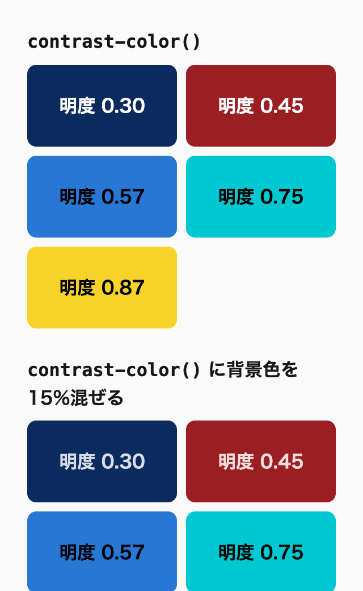
幅 320px（上の部分）
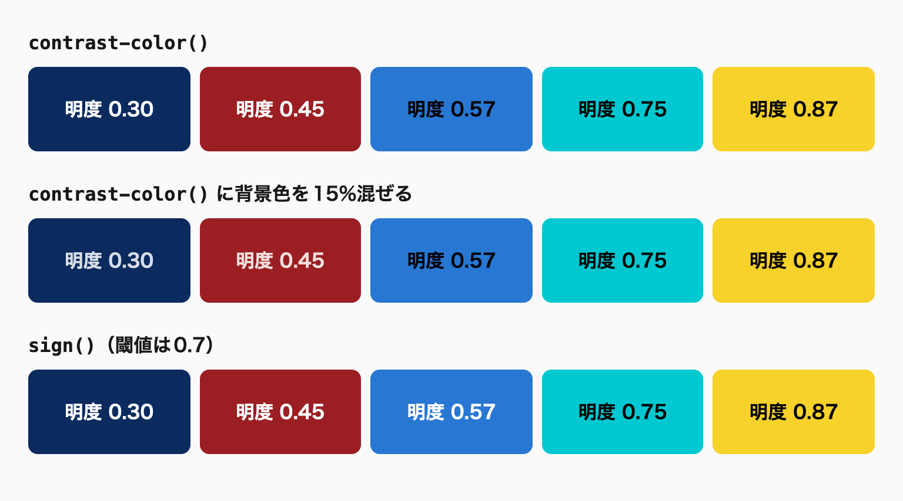
幅 768px
どの色見本でも、CSSの側で指定しているのは背景色だけです。書き方によって結果が分かれるのは明度0.57の青で、contrast-color() の段では黒い文字に、sign() の段では白い文字になります（2026年10月、Chrome 154で確認）。デモの色は、どの書き方で選ばれた文字色とのコントラスト比も4.5:1以上になるものを選んでいます。Safari 26より前のブラウザでは、上と中の段の文字色が親から継承した色になります。
対象の環境にSafari 18系が含まれる場合と、黒と白を切り替える明度や切り替えた先の色を自分で決めたい場合は、contrast-color() では足りません。どちらの場合も、相対カラー構文と sign() で書きます。
@scope (.scoped.badge) to (.scoped) {
:scope {
--_background: var(--badge--background, var(--color--accent--600));
background-color: var(--_background);
color: oklch(from var(--_background) sign(0.7 - l) 0 h);
}
}sign() は、中の値が正なら1を、負なら-1を、0なら0を返す関数です。これを相対カラー構文の明度の位置に書くと、元の色の明度によって、明度が1か、0以下の色を作れます。
背景の明度が0.7より低いと、0.7 - l が正になり、明度は1、つまり白になります。0.7以上なら明度は0か-1になります。oklch() の明度は0より小さくならないので、-1は0に切り詰められ、どちらも黒になります。彩度を0にしているので色相は見た目に影響せず、元の色の h をそのまま渡しています。
sign() は、2025年6月にすべての主要なブラウザで使えるようになりました（2026年10月確認）。相対カラー構文もSafari 18から使えるので、本書の対象のブラウザ（Safari 18系の最終版以降）でこの書き方が動きます。なお、sign() を相対カラー構文の中で使う書き方は、Chrome 153と154でだけ確認しています。
Baseline新しく利用可能2025年6月から
sign()
web-features 3.40.0 のデータ（2026年9月確認）
切り替える明度（閾値）は、式の中の0.7を書き換えて決められます。本書が0.7にする理由は、次の見出しで説明します。切り替えた先の色も決められます。ブランドの濃い色や、少しだけ色味のある白を文字色にしたいときは、sign() の結果を明度の段階に置き換えます。
@scope (.scoped.badge) to (.scoped) {
:scope {
--_background: var(--badge--background, var(--color--accent--600));
background-color: var(--_background);
color: oklch(from var(--_background) calc(0.2 + 0.75 * max(sign(0.7 - l), 0)) 0.02 h);
}
}max(sign(0.7 - l), 0) は、背景の明度が0.7より低ければ1に、0.7以上なら0になります。これを0.75倍して0.2を足すので、文字色の明度は0.95か0.2になり、彩度0.02で背景の色相を少しだけ帯びます。color-mix() で混ぜる方法と違い、文字色の明度と彩度が背景色によらず決まるので、コントラスト比を見積もりやすくなります。ただし、式が長くなるので、決まった組み合わせが少ないなら、トークンで組み合わせを決めたほうが読みやすくなります。
閾値は、sign() の式で、どの明度から黒い文字にするかの境目です。0.7は読みやすさを優先した本書の方針で、WCAG 2.xのコントラスト比の高いほうを選ぶ値ではありません。コントラスト比の高いほうを選ぶなら、無彩色の背景では、白とのコントラスト比と黒とのコントラスト比が等しくなる明度0.56あたりが閾値になります。本書はこれより上の0.7に置き、中間の明度の色では白を選びます。
0.56にしないのは、中間の明度では、WCAG 2.xのコントラスト比が実際の読みやすさと一致しないことがあるからです。「contrast-color() で黒か白を選ぶ」で見た明度0.57の青では、比の高い黒が選ばれますが、APCAとMDNは白い文字のほうを適切としています。この例は0.7という数値の根拠ではなく、閾値を0.56より上に置くのは、中間の明度の色では白い文字のほうを読みやすく感じることが多いという本書の判断によります。どの色相や文字サイズでも0.7が最適とは限らないので、使う背景色ごとに表示を確かめます。
その代わり、0.7で白が選ばれる色の一部は、通常の大きさの文字の基準（4.5:1）に届きません。本書のルールでは、文字と背景のコントラスト比はWCAG 2.1のAAを満たす必要があります。そこで、文字を載せる背景のトークンを選ぶ段階で、選ばれる文字色とのコントラスト比を確かめ、基準に届かない色を除きます。無彩色の背景では、次のようになります。
| 背景の明度（無彩色） | 選ばれる文字色 | コントラスト比 | 背景のトークンに |
|---|---|---|---|
| 0.55 | 白 | 約4.9:1 | 使える |
| 0.6 | 白 | 約3.9:1 | 使わない |
| 0.65 | 白 | 約3.2:1 | 使わない |
| 0.69 | 白 | 約2.8:1 | 使わない |
| 0.7 | 黒 | 約7.9:1 | 使える |
| 0.75 | 黒 | 約9.4:1 | 使える |
明度がおよそ0.57から0.7までの色は、白が選ばれて基準を下回るので、背景のトークンに使いません。この範囲が使えないのは色そのものの性質ではなく、本書の閾値で白が選ばれるからです。明度0.69の灰色でも、黒を選べばコントラスト比は約7.6:1あります。有彩色では範囲の境目が色相によって少し動くので、実際のトークンごとに確かめます。
どちらの書き方も、黒と白のうちどちらかを選ぶだけで、選んだ色が基準を満たすことまでは保証しません。最後は、実際の背景色と文字色の組み合わせでコントラスト比を確かめます※1。知覚にもとづくコントラストのモデルであるAPCAで0.7を比べた結果は、ページの最後の「閾値をAPCAで比べる」にまとめています。
contrast-color() は、背景色から文字色を決めるだけでなく、向きを逆にして、文字色から背景の色を決めるのにも使えます。文字色が先に決まる部品では、文字色と対比する黒か白を求め、文字色を少しだけ混ぜて背景色にします。
@scope (.scoped.toast) to (.scoped) {
:scope {
--_foreground: var(--toast--foreground, var(--foreground--base));
--_contrast-color: contrast-color(var(--_foreground));
background-color: color-mix(in oklab, var(--_foreground), var(--_contrast-color) 90%);
color: var(--_foreground);
}
}--_contrast-color が、文字色と対比する黒か白です。背景色は、その黒か白に文字色を10%だけ混ぜて作ります。暗い文字色なら淡い背景に、明るい文字色なら暗い背景になります※2。この節で扱うのは、contrast-color() が受け持つ2つの宣言だけです。
Safari 26より前の環境でも、未登録のカスタムプロパティ --_contrast-color は、未対応の関数を含む値をそのまま保持します。無効になるのは、その値を var() で代入した background-color を色として計算する段階です。計算値は無効になり、初期値の transparent になるので、背景色が付きません。文字色は残りますが、読めるかどうかはページの背景で決まります。Safari 18系に対応するときは、--_contrast-color の値を oklch(from var(--_foreground) sign(0.7 - l) 0 h) に替えます。背景色が付くので、この置き換えは必須です。背景に文字色を混ぜるとコントラスト比は下がるので、色ごとに確かめます。
画像の上に文字を載せる部品では、画像が表示されなかった場合に備えて、文字色と対比する背景色を敷きます。文字色は先に決まっているので、背景色はその文字色から求めます。contrast-color(currentColor) に未対応の環境では宣言が無効になるので、同じ値を sign() で先に書いておきます。
@scope (.scoped.image-banner) to (.scoped) {
:scope {
display: block grid;
grid-template-areas: "--pile";
background-color: oklch(from currentColor sign(0.7 - l) 0 h);
background-color: contrast-color(currentColor);
color: var(--image-banner--foreground, oklch(100% 0 0deg));
& > img,
& > ._body {
grid-area: --pile;
}
}
}currentColor は、その要素の color の値です。白い文字なら黒い背景が、濃い文字なら白い背景が敷かれるので、画像に合わせて文字色を変えても、背景色を書き直す必要がありません。1つ目の宣言が、Safari 18系を含む環境で背景色を保証します。2つ目の contrast-color(currentColor) に対応する環境では、後ろの宣言が前の宣言を上書きし、対応しない環境では無効になって1つ目が残ります。画像が表示されれば、背景色は画像に隠れて見えません※3。
次のデモでは、画像の上に文字を載せたバナーで、画像を表示できなかった場合の背景色を文字色から決めています。
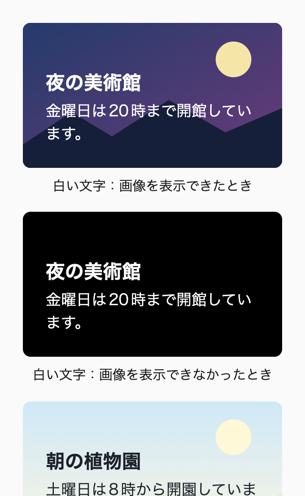
幅 320px（上の部分）
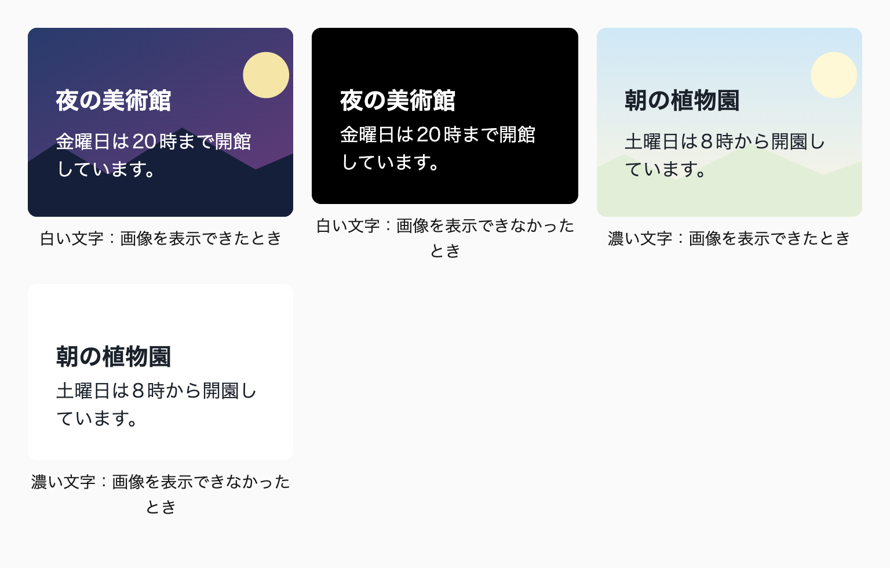
幅 768px
白い文字のバナーには黒い背景が、濃い文字のバナーには白い背景が敷かれます。CSSで指定しているのは文字色だけで、背景色は書いていません。
contrast-color(currentColor) だけを書くと、Safari 18系では背景色が付かず、白い文字が明るいページの背景に溶け込みます。画像が読み込めなかったときに文字が読めなくなるので、「画像が失敗したときだけの問題」として省くことはできません。sign() の式を先に置くのは、そのためです。画像の上の文字には、画像のどの部分とも対比するよう白や黒に近い色を選ぶので、WCAG 2.xとAPCAで判定が分かれる中間の明度の色は、ふつう渡されません。
contrast-color() も sign() の式も、背景色が不透明であることを前提にしています。仕様は、渡された色を不透明な背景として使ったときの対比で白か黒を選ぶと定めています。2026年10月にChrome 152で確かめたところ、contrast-color() は渡された色の透明度を無視し、ほとんど透明な黒（rgb(0 0 0 / 0.1)）にも白を選びました。半透明の背景色では、下にある色と重なった色が実際の背景になるので、白い文字が明るいページの上に載ることがあります。半透明の背景に文字を載せるときは、重なったあとの色で確かめます。
背景のトークンの値がライトとダークの配色で変わると、選ばれる文字色も配色ごとに変わります。これは背景色から文字色を決める書き方の利点ですが、確かめる組み合わせも配色の数だけ増えます。中間の明度に近い段階の色は、両方の配色で表示を確かめます。
文字以外の要素にも、同じ書き方を使えます。アイコンや枠線のように、背景の上に描く部品の色を決めるときも、背景色から黒か白を選べます。非テキストのコントラスト比の基準は、文字とは異なり3:1です。
sign() の式に採用した0.7を、知覚にもとづくコントラストのモデルであるAPCAでも比べてみました。この比較は0.7を決めた根拠ではなく、決めた後に確かめたものです。計算にはAPCAのバージョン0.0.98G-4gの定数を使い、背景をOKLCHの色、文字を白（#fff）と黒（#000）として、コントラスト値（Lc）の絶対値を比べました。
無彩色の背景では、白い文字と黒い文字のLcの絶対値が等しくなるのは明度0.72あたりです。有彩色では色相によって少し動き、彩度0.12の色ではおよそ0.70から0.73の間でした。「contrast-color() で黒か白を選ぶ」で挙げた明度0.57の青のLcも、同じ定数で計算した値です。0.7は、WCAG 2.xの交点の0.56よりも、APCAの交点の近くにあります。
ほかの資料では、0.6前後のような別の閾値を見かけることもあります。閾値は、0.56に近いほどWCAG 2.xのコントラスト比に、0.72に近いほどAPCAの評価に従います。その間の値は、両者の中間で白と黒を切り替えるものです。APCAはまだWCAGの基準として採用されていないので、本書は、WCAG 2.1のAAを満たすかどうかを背景のトークンを選ぶ段階で確かめ、黒と白を切り替える明度はAPCAの交点の近くにしています。
推奨背景色から文字色を黒か白に決めるときは、対象の環境が Safari 26 以上なら contrast-color() で書く。Safari 18系に対応するときや、切り替える明度や色を自分で決めたいときは、相対カラー構文と sign() で書く。
prefer-contrast-color
推奨画像の上に文字を載せる部品で、画像が表示されなかった場合に備える背景色は、文字色から決める。background-color: oklch(from currentColor sign(0.7 - l) 0 h) を先に書き、続けて background-color: contrast-color(currentColor) で上書きする。
contrast-color-for-image-fallback
ダークモードに対応するときは、セマンティクスのトークンの値を light-dark() で書き、<meta name="color-scheme" content="light dark"> で両方の配色に対応することを宣言します。配色の切り替えはトークンの側で済ませ、コンポーネントには prefers-color-scheme のメディアクエリを書きません。
サイトの中でテーマを選べるようにする場合も、このメタ要素の content を書き換えるだけで済みます。色の切り替えはすべて light-dark() に任せ、CSSの側でテーマの属性を参照しないので、切り替えの仕組みが1か所にまとまります。
Baseline新しく利用可能2024年5月から
light-dark()
web-features 3.40.0 のデータ（2026年9月確認）
ダークモードへの対応でよく見るのは、コンポーネントごとに prefers-color-scheme のメディアクエリを書き、ダーク用の色を指定し直す書き方です。
/* 🙅♂ Not Recommended */
._card {
background-color: var(--color--neutral--100);
color: var(--color--neutral--950);
@media (prefers-color-scheme: dark) {
background-color: var(--color--neutral--900);
color: var(--color--neutral--50);
}
}この書き方では、ダークモードの色がサイトのあちこちに散らばります。ダーク用の値を書き忘れたコンポーネントだけが明るいまま残る、といった不具合も起きがちです。ダークモードの色を調整したくなったときは、すべてのコンポーネントのメディアクエリを探して直すことになります。AIにダークモードへの対応を頼むと、この形のコードが出てくることが多いので注意してください。
テーマを手動で切り替えられるようにすると、問題はさらに増えます。メディアクエリはOSの設定しか見ないので、サイトの中で選んだテーマに合わせるには、[data-theme="dark"] のようなセレクタでも同じ色を書くことになります。ダーク用の色がメディアクエリと属性セレクタの2か所に分かれ、どちらかを直し忘れると、切り替えの方法によって色が変わります。
ダークモードの色は、セマンティクスのトークンに light-dark() で両方の値を持たせます。light-dark(ライトの色, ダークの色) と書くと、要素に適用されている配色に合わせて、どちらか一方の値になります。
:root {
--background--base: light-dark(var(--color--neutral--100), var(--color--neutral--900));
--background--surface: light-dark(var(--color--neutral--200), var(--color--neutral--800));
--foreground--base: light-dark(var(--color--neutral--950), var(--color--neutral--50));
--foreground--muted: light-dark(var(--color--neutral--600), var(--color--neutral--400));
--border--base: light-dark(var(--color--neutral--300), var(--color--neutral--700));
}コンポーネントは、これらのセマンティクスのトークンを参照するだけです。配色による切り替えはトークンの側で済んでいるので、コンポーネントに prefers-color-scheme のメディアクエリを書く必要はありません。ダークモードの色を調整するときも、見直すのはトークンの定義だけです。
プリミティブのトークン（--color--neutral--100 など）には、light-dark() を使いません。プリミティブは「明度97%のグレー」のような色そのものを表し、どの配色で使うかはセマンティクスの層で決めるからです※1。
light-dark() が受け取れるのは色だけです。画像を配色で切り替える書き方がすべての主要なブラウザで使えるようになったのは、Safari 27が出た2026年9月です。本書の対象のブラウザではまだ使えません（2026年9月確認）。
次のデモでは、同じカードをライトとダークの2つの配色で並べています。比べやすいように要素ごとに color-scheme を指定していますが、実際のサイトでは、次の見出しで説明するメタ要素が配色を決めます。
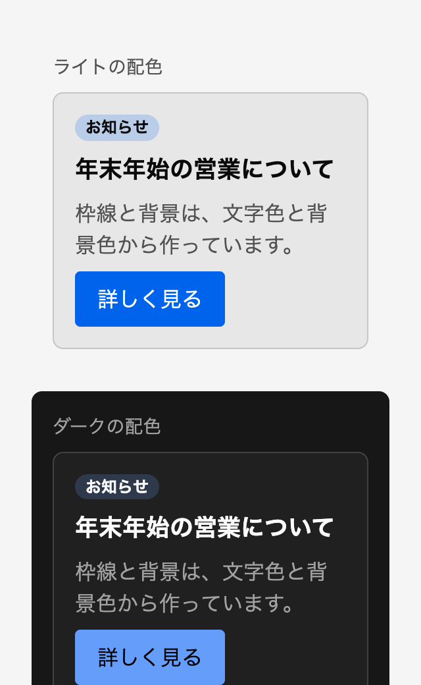
幅 320px（上の部分）
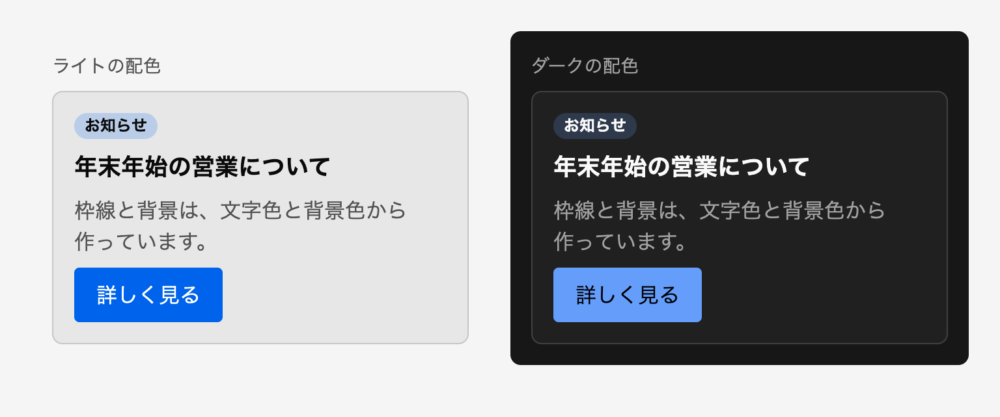
幅 768px
カードの側では、配色を一切切り替えていません。枠線は文字色から相対カラー構文で、背景は color-mix() で作っています。ボタンの文字色は、背景の明度から sign() で決めています。ダークの配色ではアクセントカラーが明るい段階に替わるので、ボタンの文字は黒になります※2。
light-dark() を使うには、ページが両方の配色に対応していることを宣言する必要があります。宣言がないと、OSがダークモードでも light-dark() は常にライトの値になります（2026年9月、Chrome 153で確認）。私のテンプレートでは、CSSの color-scheme プロパティではなく、HTMLのメタ要素で宣言しています。
<meta name="color-scheme" content="light dark" />メタ要素で宣言すると、スクロールバーやフォームの部品といったブラウザの部品も、ページと同じ配色で描画されます。CSSを読み込む前から配色が決まるので、読み込みの途中で背景が白く光ることも防げます。
反対に、ダークモードに対応していないサイトでは、この宣言を書きません。色を指定していない部分だけが暗い配色になり、文字を読めなくなることがあるからです※3。
Baseline広く利用可能2024年8月から（新しく利用可能になったのは2022年2月）
color-scheme
web-features 3.40.0 のデータ（2026年9月確認）
ライトの配色のページの中で、フッターのような一部のコンポーネントだけを暗い配色にしたい場合があります。そのときは、コンポーネントのルートに color-scheme: dark を指定します。color-scheme は継承するプロパティなので、コンポーネントの中の light-dark() はダークの値になり、フォームの部品やスクロールバーも暗い配色で描画されます。
ただし、color-scheme を指定しただけでは、そのコンポーネントの文字色と背景色は切り替わりません。親から継承した color は、親の要素でライトの値に計算された色だからです。背景も、指定しなければ透明のままで、親の明るい背景が透けて見えます（2026年10月、Chrome 152で確認）。color-scheme を指定した要素では、color と background-color をセマンティクスのトークンで指定し直します。
@scope (.scoped.site-footer) to (.scoped) {
:scope {
color-scheme: dark;
background-color: var(--background--base);
color: var(--foreground--base);
}
}コンポーネントの中で、トークンを参照している宣言は指定し直さなくても切り替わります。登録していないカスタムプロパティは、light-dark() を含む値のまま継承されるので、var() で参照した要素の配色で色が決まるからです。
この仕組みは、トークンを @property で <color> 型として登録すると成り立ちません。登録したプロパティは、値を定義した :root の時点で色に計算され、その色が子孫に継承されます。:root がライトの配色なら、color-scheme: dark のコンポーネントの中でもライトの色のままです（2026年10月、Chrome 152で確認）。
/* 🙅♂ Not Recommended */
@property --foreground--base {
syntax: "<color>";
inherits: true;
initial-value: oklch(0% 0 0deg);
}本書がトークンの定義に @property を使わないのは、このように振る舞いが変わるからです※4。色をアニメーションさせるために登録が必要なら、トークンではなく、コンポーネントの名前を含むプロパティを登録し、コンポーネントの中でトークンを受け取ります。値はその要素の配色で計算されるので、light-dark() の切り替えも保たれます。
::placeholder や ::selection のような擬似要素の色も、light-dark() を含むトークンで指定します。擬似要素は元の要素の配色を引き継ぐので、トークンを使えば一緒に切り替わります。色を直接書くと、暗い配色のコンポーネントの中で、プレースホルダーや選択範囲の色だけがライトの配色のまま残ります。
<iframe> で埋め込んだ文書は、<iframe> 要素の color-scheme を引き継ぎません。埋め込まれた文書の配色は、その文書のmeta要素や color-scheme で決まります。仕様では、<iframe> 要素と埋め込まれた文書の配色が食い違うと、ブラウザは埋め込まれた文書に不透明な背景を敷くことになっています。Safariがこの扱いに従っているかは確かめていません。
OSの設定とは別に、サイトの中でテーマを選べるようにする場合も、メタ要素の content を書き換えます。私のテンプレートでは「ライト」「ダーク」「OSの設定に合わせる」の3つを選べるようにし、それぞれ light only、dark only、light dark を設定しています。選んだ値はlocalStorageに保存し、次にページを開いたときに読み戻します。
<meta name="color-scheme" content="light dark" />
<script>
(() => {
try {
const stored = localStorage.getItem('color-scheme');
const meta = document.querySelector('meta[name="color-scheme"]');
if (stored && meta) meta.content = stored;
} catch {
// Cookie を無効にしている環境では、localStorage にアクセスすると例外が発生する
}
})();
</script>このスクリプトは <head> の中に直接書き、ページの描画より前に実行します。外部のファイルにして後から読み込むと、保存したテーマに切り替わるまでの一瞬、OSの配色で表示されてしまいます。localStorageは、Cookieを無効にしている環境では例外を投げるので、必ず try で囲みます。
JavaScriptが無効な環境では、スクリプトが動かないので、メタ要素の元の値（light dark）のまま、OSの設定に従って表示されます。読み出しの失敗も同じ結果になります。
only を付けた値は、ページがその配色にしか対応していないことを表します。ブラウザが独自にページを暗くする機能を持っていても、only があれば、ページの配色はそのまま保たれます。
以前の私は、<html> の data-theme 属性とメタ要素の両方を書き換えていました。いまはメタ要素だけを書き換え、色はすべて light-dark() に任せています。CSSの側でテーマの属性を参照しないので、切り替えの仕組みが1か所にまとまります。
画像の明るさや影の強さのように、色以外のスタイルを配色で変えたい場合もあります。テンプレートでは、メタ要素の値から --color-scheme というカスタムプロパティを決めておき、スタイルクエリで分岐できるようにしています。
:root {
&:has(meta[name="color-scheme"][content="light only"]) {
--color-scheme: --light;
}
&:has(meta[name="color-scheme"][content="dark only"]) {
--color-scheme: --dark;
}
&:has(meta[name="color-scheme"][content="light dark"]) {
--color-scheme: --light;
@media (prefers-color-scheme: dark) {
--color-scheme: --dark;
}
}
}使う側では、@container style(--color-scheme: --dark) のように条件を書きます。値を -- で始めるのは、自分で付けた名前だと分かるようにするためです。スタイルクエリは2026年5月にすべての主要なブラウザで使えるようになったので、本書の対象のブラウザでは問題なく動作します（2026年9月確認）。ただし、色の切り替えは light-dark() で足りるので、このフラグを使う場面は多くありません。
次のデモでは、ラジオボタンで選んだ値をメタ要素の content に書き込み、ラジオボタンの下に --color-scheme の値を表示しています。「ダーク」を選ぶと、カードの文字色、背景色、影は light-dark() のトークンで切り替わり、イラストの明るさはスタイルクエリで抑えられます。「OSの設定に合わせる」を選んだ状態では、OSの外観の設定を変えると、表示も一緒に変わります。
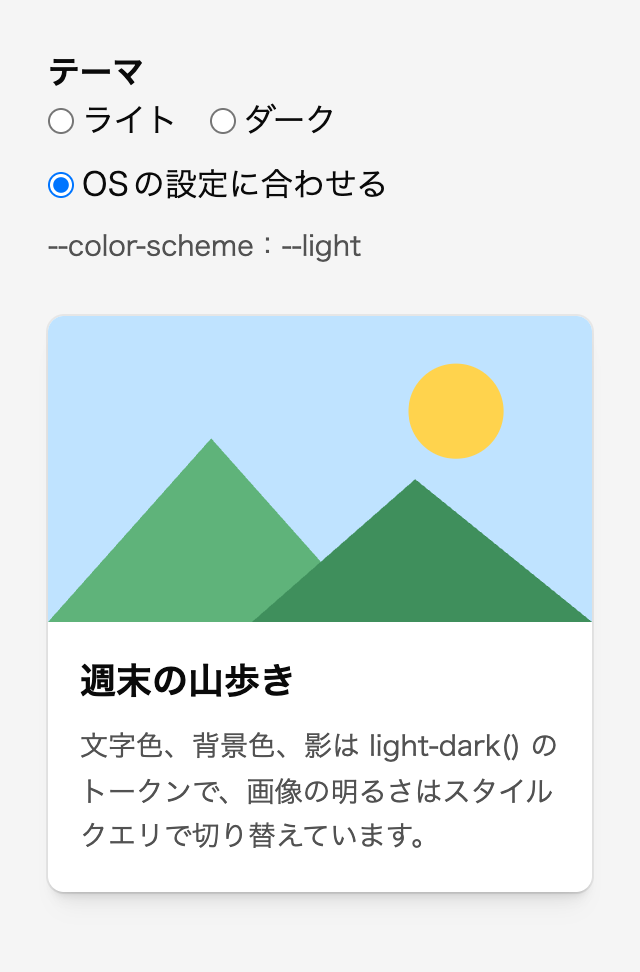
幅 320px
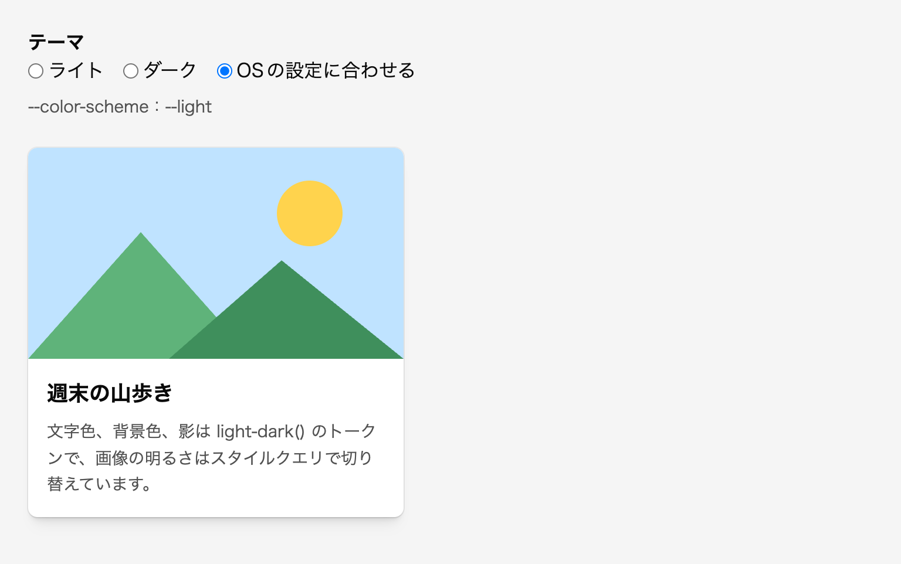
幅 768px
テーマを切り替える瞬間には、View Transitionで画面を上から塗り替えるアニメーションを付けています。切り替えの処理は、types に theme-toggle を指定して document.startViewTransition() に渡します。CSSの側では、:active-view-transition-type(theme-toggle) でアニメーションを定義します。動きを減らす設定をしているユーザーには、アニメーションを付けません※5。
私が担当する案件では、ダークモードに対応せず、ライトの配色だけで作ることがほとんどです。デザインがライトの配色しか用意していないなら、無理に対応する必要はありません。
ダークモードに対応するなら、すべての色をセマンティクスのトークンで管理していることが前提になります。16進数の色がコンポーネントに直接書かれていると、その部分だけが切り替わりません。CMSで編集者が本文の文字に色を付けられる場合は、その色がダークモードの背景で読めるかどうかまでは保証できません。
影の色も、配色によって変えます。暗い背景に白い影を付けると、影ではなく光って見えるので、ダークモードでは影を黒のままにし、不透明度を上げて奥行きを表します※6。
推奨ダークモードの色はセマンティクスのトークンに light-dark() で持たせ、コンポーネントに prefers-color-scheme のメディアクエリを書かない。
light-dark-in-semantic-tokens
必須light-dark() を使うページでは、<meta name="color-scheme" content="light dark"> で両方の配色に対応していることを宣言する。
color-scheme-meta-for-light-dark
必須コンポーネントに color-scheme を指定するときは、同じ要素で color と background-color をセマンティクスのトークンで指定し直す。
redeclare-colors-with-color-scheme
推奨テーマを手動で切り替えるときは、<meta name="color-scheme"> の content を light only、dark only、light dark のいずれかに書き換える。
theme-switch-via-meta
強制カラーモードでは、ブラウザがページの色を、ユーザーが選んだ少数のシステムカラーに置き換えます。背景色や影で表していた境界や図形は、この置き換えで消えてしまうことがあります。枠線は border: none にせず、透明にして残します。background-color で描いたアイコンは、カスタムプロパティを経由して、システムカラーにフォールバックさせます。
色の違いだけで情報を伝えないことも必要です。実装を終えたら、グレースケールの表示に切り替えて、リンクや入力エラーのような状態を見分けられるかを確かめます。文字と背景のコントラスト比は、WCAGのAAを満たすようにします。
Baseline広く利用可能2025年3月から（新しく利用可能になったのは2022年9月）
forced-colors メディア特性
web-features 3.40.0 のデータ（2026年9月確認）
強制カラーモードは、Windowsの「コントラスト テーマ」などを有効にしたときの表示モードです。ユーザーが選んだ配色（黒地に白い文字など）で、すべてのページが表示されます。Microsoftのデータでは、Windowsのユーザーの約4%がこの機能を使っています。WebAIMが視力の弱い人に行った調査（2018年）では、約半数がなんらかの高コントラストの表示を使っていると答えています。Windowsを使う訪問者に限れば、25人に1人程度が強制カラーモードでページを見ている可能性があるということです。
ブラウザにも、似た機能が広がっています。Edge 130にはページの配色を指定する設定が、Firefox 138にはコントラストを制御する設定が入りました。Windowsだけの特殊な環境だと考えて、対応を後回しにする理由はありません。
強制カラーモードでは、color、background-color、border-color、outline-color、text-decoration-color などの色が、システムカラーに置き換わります。box-shadow と text-shadow は none になり、URLで指定した画像以外の background-image（グラデーションなど）も表示されなくなります。color-scheme は light dark として扱われ、scrollbar-color は auto に戻ります。
問題になるのは、色だけで何かを表していた部分です。背景色だけで範囲を示していたボタンは、背景色が置き換わると、ただの文字になります。background-color に currentColor を指定して描いたアイコンは、背景色がページの背景と同じ色に置き換わり、見えなくなります。
【参考画像：強制カラーモード（黒地に白い文字のテーマ）で、この節のデモを表示した画面。左の「対策なし」の列では、青い背景のボタンが背景色を失い、白い「資料をダウンロード」の文字だけが残っていて、どこまでがボタンなのか分からない。ボタンの中の矢印のアイコンと、黄色い文字のリンク「お知らせの一覧へ」の後ろにある矢印のアイコンは、どちらも表示されていない。右の「対策あり」の列では、同じボタンの周りに白い1pxの枠線が表示され、ボタンの中に白い矢印が見えている。リンクの後ろの矢印も、リンクの文字と同じ黄色で表示されている。】
強制カラーモードに合わせて色を指定し直すときは、システムカラーを使います。システムカラーは、ユーザーの配色の設定から決まる色のキーワードです。よく使うのは、次の組み合わせです。
Canvas と CanvasText：ページの背景色と文字色LinkText：リンクの文字色ButtonFace と ButtonText：ボタンの背景色と文字色GrayText：無効な要素の文字色Highlight と HighlightText：選択した部分の背景色と文字色入力欄やボタンの枠線を描き直す場面では、ほかのシステムカラーも使えます。Field と FieldText は入力欄の背景色と文字色、ButtonBorder はボタンの枠線の色、AccentColor と AccentColorText はチェックボックスの選択色のような強調の色とその上の文字色を表します。ButtonBorder は、Safariが対応していないので、ButtonText などで代用します。
Baseline一部のブラウザのみ
システムカラー ButtonBorder
web-features 3.40.0 のデータ（2026年9月確認）
kiso.cssでは、強制カラーモードのときだけ、<mark> の色を Highlight と HighlightText にしています。強制カラーモードでは <mark> の色が変わらない場合もあり、蛍光ペンで強調したという意味を伝えられなくなるからです。
:where(mark) {
@media (forced-colors: active) {
background-color: Highlight;
color: HighlightText;
}
}システムカラーは、強制カラーモード以外でも使えます。「8-2 ベーススタイルに書くもの（巻2）」で紹介したフォーカスリングは、Canvas と CanvasText の2色を重ねているので、強制カラーモードでもそのまま見えます。
要素ごとに強制カラーモードを無効にする、forced-color-adjust: none というプロパティもあります。ただし、ユーザーが自分で選んだ配色を打ち消す指定なので、本書では、システムカラーに置き換えると図として成り立たないグラフのような要素に限って使います（「16-6 輪郭と枠線を描く」のドーナツグラフ）。Safariも対応していません（2026年9月確認）。
背景色で範囲を示すボタンやカードでも、枠線を border: none で消さないようにします。代わりに border-color: transparent で、枠線を透明にしておきます。
/* 🙅♂ Not Recommended */
._primary-button {
border: none;
background-color: oklch(52% 0.16 250deg);
color: oklch(100% 0 0deg);
}._primary-button {
border-color: transparent;
background-color: oklch(52% 0.16 250deg);
color: oklch(100% 0 0deg);
}通常の表示では、2つのボタンの見た目は変わりません。違いが出るのは強制カラーモードのときです。border-color はシステムカラーに置き換わるので、透明にしておいた枠線に色が付きます。背景色が消えても枠線が残るので、クリックできる範囲が分かります。
kiso.cssは、ボタンやフォームの部品に 1px の実線の枠線を付けています。デザインで枠線を消したいときも、kiso.cssのREADMEのとおり、border: none ではなく border-color: transparent で上書きします※1。
フォーカスリングを box-shadow などで描き直すときも、outline は消さず、透明にして残します。通常の表示では、透明な outline は見えず、box-shadow の表現だけが見えます。強制カラーモードでは outline-color がシステムカラーに置き換わるので、キーボードで操作している位置が見えます。outline: none で消すと、強制カラーモードでもリングが消えます。
._field {
&:focus-visible {
box-shadow: 0 0 0 4px oklch(60% 0.16 250deg / 40%);
outline-color: transparent;
}
}同じ理由で、要素の境界を box-shadow だけで描かないようにします。box-shadow で描いた枠線は、強制カラーモードでは none になって消えます※2。
mask-image や clip-path で形を切り抜き、background-color で色を塗るアイコンは、背景色を文字色（前景色）のように使っています。強制カラーモードでは、この背景色がページの背景色に置き換わるため、アイコンが見えなくなります。
そこで、背景色をカスタムプロパティ --background-current から受け取るようにします。通常は currentColor を、強制カラーモードでは文脈に合ったシステムカラーを入れておきます。
@layer base {
:root {
--background-current: currentColor;
@media (forced-colors: active) {
--background-current: CanvasText;
}
}
:any-link {
@media (forced-colors: active) {
--background-current: LinkText;
}
}
button {
&:enabled {
@media (forced-colors: active) {
--background-current: ButtonText;
}
}
}
:disabled {
@media (forced-colors: active) {
--background-current: GrayText;
}
}
}通常の文字の中では CanvasText、リンクの中では LinkText、有効なボタンの中では ButtonText、無効な要素の中では GrayText になります。アイコンは、周りの文字と同じシステムカラーで描かれます。これらの指定は base レイヤーに書くので、コンポーネントの側で文脈を足したいときは、クラス1つで上書きできます。レイヤーを使えない環境では、セレクタを :where() で包んで詳細度を0にします※3。
アイコンを描く側では、background-color に var(--background-current) を指定するだけです。--chevron--rightward は、矢印のSVGをdata URIにしたトークンです※4。
._more {
&::after {
content: "";
/* 空の擬似要素はインラインになり、幅と高さが効かないので、箱を作る */
display: inline flow-root;
mask-image: var(--chevron--rightward);
mask-repeat: no-repeat;
mask-position: center;
mask-size: contain;
inline-size: 1em;
aspect-ratio: 1;
background-color: var(--background-current);
}
}background-color のフォールバックは、一度 :root に定義しておけば、あとは currentColor の代わりに var(--background-current) と書くだけで済みます。
次のデモでは、前の見出しの透明な枠線と、この見出しの --background-current を使い、ボタンとリンクを「対策なし」と「対策あり」の2列で並べています。通常の表示では、2列の見た目は同じです。
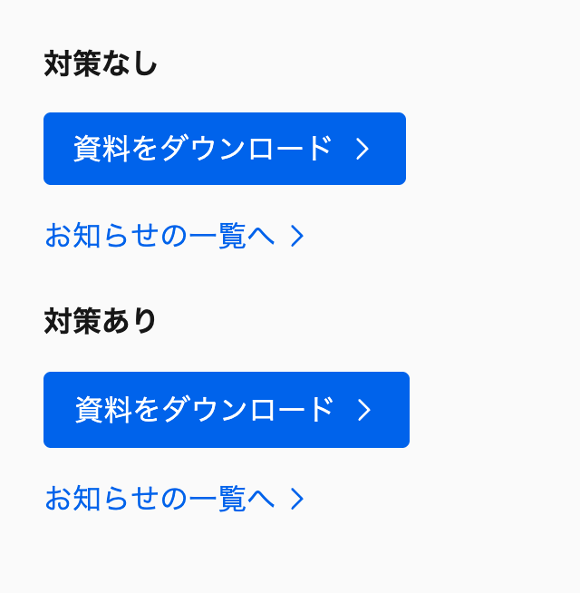
幅 320px
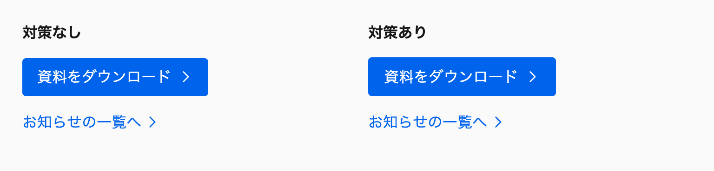
幅 768px
強制カラーモードの見え方は、ChromeのDevToolsで確かめられます。「Rendering」パネルの「Emulate CSS media feature forced-colors」で forced-colors: active を選ぶと、ページ全体が強制カラーモードで描画されます。「対策なし」の列では、ボタンの範囲が分からなくなり、矢印のアイコンが消えます。この節の冒頭の図は、このエミュレーションで表示したものです。
グローバルなカスタムプロパティに頼らず、1つのコンポーネントの中で済ませたい場合は、グラデーションを重ねる方法もあります。background-image に単色のグラデーションを、background-color にシステムカラーを指定します。
._crumb {
&::before {
content: "";
/* 空の擬似要素はインラインになり、幅と高さが効かないので、箱を作る */
display: inline flow-root;
mask-image: var(--chevron--rightward);
mask-repeat: no-repeat;
mask-position: center;
mask-size: contain;
inline-size: 0.75em;
aspect-ratio: 1;
background-image: conic-gradient(currentColor 0 0);
background-color: CanvasText;
}
}通常の表示では、グラデーションが currentColor で上を塗りつぶすので、下の CanvasText は見えません。強制カラーモードではグラデーションが消え、CanvasText が見えます。私は最近の案件で、パンくずリストの区切りの矢印をこの方法で描きました。
ただし、この方法では、リンクの中でも色は CanvasText のままです（2026年9月、Chrome 153のエミュレーションで確認）。パンくずリストの区切りのように、通常の文字の文脈でしか使わない図形に向いています。リンクやボタンの中のアイコンには、--background-current を使います。
インラインSVGの色は、強制カラーモードでも置き換わるとは限りません。Firefox 138のコントラストの設定では、currentColor がシステムカラーに置き換わらない場合があります。Chrome 153のエミュレーションでも、fill 属性やCSSで指定したSVGの色は、元の色のままでした（2026年9月確認）。そこで、強制カラーモードのときは、プロジェクトで管理している単色のアイコンに限って、fill と stroke をシステムカラーに固定します。
対象を見分けるために、単色のアイコンは svg 要素に fill="currentColor"（塗りで描く場合）か stroke="currentColor"（線で描く場合）を書き、図形の要素には色を書かないことにします。塗りで描くアイコンには fill だけを、線で描くアイコンには stroke だけを補正します。両方をすべての svg に指定すると、もともと線のない塗りのアイコンにも、svg 要素から継承した線が描かれてしまいます。stroke の初期値は none で、fill と stroke はどちらも継承するからです（SVG 2）。
@layer base {
svg {
@media (forced-colors: active) {
--_b--svg-foreground: CanvasText;
}
/* 塗りで描くアイコン */
&[fill="currentColor" i] {
@media (forced-colors: active) {
fill: var(--_b--svg-foreground) !important;
}
}
/* 線で描くアイコン */
&[stroke="currentColor" i] {
@media (forced-colors: active) {
stroke: var(--_b--svg-foreground) !important;
}
}
&:is(:any-link *) {
@media (forced-colors: active) {
--_b--svg-foreground: LinkText;
}
}
&:is(button:enabled *) {
@media (forced-colors: active) {
--_b--svg-foreground: ButtonText;
}
}
&:is(:disabled *) {
@media (forced-colors: active) {
--_b--svg-foreground: GrayText;
}
}
}
}ここで !important を使うのは、ベーススタイルが components レイヤーより前の base レイヤーにあるからです。コンポーネントの側で svg 要素の色を指定していると、!important がなければ後のレイヤーにあるそちらが勝ち、システムカラーになりません。!important を付けた宣言は、レイヤーの順番が逆になり、前のレイヤーにあるものが勝ちます。!important を使ってよい場面は、「4-1 カスケード・詳細度・継承（巻1）」で整理しています。
ただし、この指定が補正できるのは、svg 要素に書いた色と、それを継承する図形だけです。図形の要素に fill や stroke を属性やCSSで書くと、その値が継承した値より優先されるので、システムカラーには置き換わりません。CSSの fill: currentColor で色を決めるアイコンも、属性のセレクタには当てはまらないので、そのコンポーネントの中で同じ補正を書きます。fill="none" のように描かない部分は、もとの none のまま残ります。
ロゴやイラストのような多色のSVGは、この補正の対象にしません。1色に置き換えると、色の違いで描き分けていた部分の区別がなくなるからです。多色のSVGは、次の <img> のアイコンと同じく、強制カラーモードの背景に溶け込まないかを確かめます。
<img> で表示するアイコンは、強制カラーモードの影響を受けません。強制カラーモードでは配色が light dark として扱われるので、黒いアイコンは黒い背景に、白いアイコンは白い背景に溶け込むおそれがあります。単色のアイコンなら、filter で背景と反対の色に塗りつぶします。
._logo {
@media (forced-colors: active) and (prefers-color-scheme: light) {
filter: brightness(0);
}
@media (forced-colors: active) and (prefers-color-scheme: dark) {
filter: brightness(0) invert(1);
}
}強制カラーモードでは意味が変わってしまう装飾は、@media (forced-colors: none) の中に書きます。たとえば、画像の上に大きな outline を内側へずらして重ね、半透明のオーバーレイにする方法があります。強制カラーモードでは outline の色が不透明なシステムカラーに置き換わり、画像全体が塗りつぶされてしまいます（2026年9月、Chrome 153のエミュレーションで確認）。
._image {
@media (forced-colors: none) {
outline: 100lvmax solid oklch(0% 0 0deg / 60%);
outline-offset: -100lvmax;
}
}スクロールバーの色も同じです。強制カラーモードでは指定した色のせいでスクロールバーを見失うおそれがあるので、変えるなら forced-colors: none の中に限ります※5。
以前の私は、この条件を @media not (forced-colors: active) と書いていました。いまは @media (forced-colors: none) にそろえています。否定の not を使わずに条件を書けるので、読み間違いが起きにくくなります。
色の見え方は人によって違います。色覚の特性がある人や、年齢とともに色を見分けにくくなった人にとって、色の違いだけで示された情報は伝わりにくくなります。電子ペーパーの端末を使う人や、スマートフォンの使いすぎを防ぐために、あえてグレースケールで表示している人もいます。色だけに頼る表現は、WCAG 2.1のレベルAの達成基準（色の使用）にも反します。
そこで、実装後の確認の項目に「グレースケール表示での確認」を入れておきます。とくに見るのは、本文の中のリンク、フォーカスやホバーの状態、入力エラーのように、色の変化で状態を表しがちな部分です。グレースケールで見分けられなければ、下線、太さ、アイコン、文言のような、色以外の手がかりを足します。
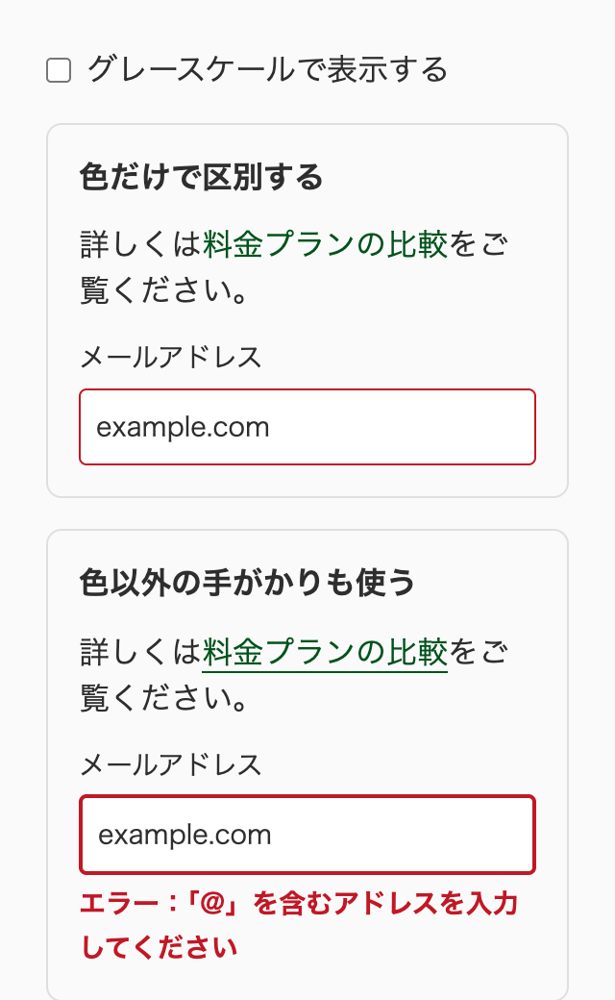
幅 320px（上の部分）
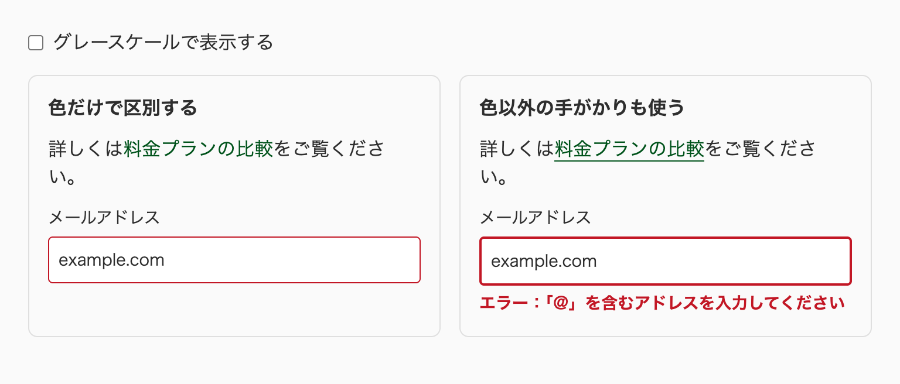
幅 768px
チェックボックスをオンにすると、2つの列がグレースケールで表示されます。左の列では、リンクが周りの文字と区別できず、入力エラーの枠線も通常の枠線と見分けられません。右の列では、リンクに下線があり、エラーの枠線は太く、エラーの内容も文章で表示されています。
確認には、OSのグレースケール表示を使うのが基本です。macOSとWindowsには、画面全体をグレースケールにする設定があります。手早く確かめたいときは、DevToolsで body に filter: grayscale(1) を一時的に書き足します。
body {
filter: grayscale(1);
}濃い赤のように、グレースケールにしても見分けにくい色もあります。必要に応じて、DevToolsの「Rendering」パネルにある色覚のエミュレーションも使います。色以外の手がかりを足すときは、下線を足す、アイコンを添える、形を変えるといった、手間の少ない方法から始めるとよいでしょう。どの方法にするかは、デザイナーと相談して決めます。
文字と背景のコントラスト比は、WCAG 2.1のAAを満たすようにします。通常の大きさの文字では4.5:1以上、大きな文字では3:1以上が基準です。確認には、WebAIMのContrast Checkerや、DevToolsのカラーピッカーに表示されるコントラスト比を使います。計算した比は四捨五入せずに比べるので、4.49:1は4.5:1の基準を満たしません。
ここでいう「大きな文字」は、WCAGの定義では18ポイント以上、太字なら14ポイント以上の文字です。CSSの単位に直すと、約24px以上、太字なら約18.7px以上になります。和文の場合は、これと同じ大きさに見える文字が該当します。見出しのつもりで大きくした文字でも、太字でない20pxの文字は通常の文字として扱うので、4.5:1が必要です。
「補足の文字」のような薄い文字色のトークンは、基準に届きにくくなります。たとえば oklch(55.6% 0 0deg) のグレーは、oklch(97% 0 0deg) の背景の上ではコントラスト比が約4.3:1になり、AAに届きません。トークンを定義するときは、組み合わせる背景のトークンごとに確かめます。私の案件でも、図のキャプションの色をAAを満たす値に調整し、その理由をコメントに残しました。
文字でない部分にも基準があります。WCAG 2.1の達成基準1.4.11（非テキストのコントラスト）では、ボタンや入力欄のようなUIコンポーネントの範囲と状態を示す部分に、隣り合う色との3:1以上のコントラスト比を求めています。入力欄の枠線、チェックボックスのオンとオフの違い、フォーカスリングが対象です。ボタンの文字やアイコンのように、範囲を示すほかの手がかりがあれば、枠線そのものは3:1に届かなくてもかまいません。
この基準には例外もあります。無効にしたコンポーネントと、ブラウザのデフォルトの見た目から変えていないコンポーネントは対象外です。逆にいえば、accent-color や枠線の色を変えた時点で、その色は自分で3:1を確かめる必要があります。淡いグレーの枠線だけで入力欄の範囲を示すデザインは、白い背景の上では基準に届かないことが多いので、トークンを決める段階で確かめます。
AIにデザインを実装させると、薄いグレーの文字や、淡い色の上の白い文字をそのまま出力することがあります。色の値を受け取ったら、コントラスト比を確かめるところまでを1つの作業にします。
推奨強制カラーモードに合わせて色を指定し直すときは、CanvasText、LinkText、ButtonText、GrayText などのシステムカラーを使う。
forced-colors-system-colors
必須枠線を消すときは、border: none ではなく border-color: transparent で透明にする。
transparent-border-over-none
推奨フォーカスリングを box-shadow などで描き直すときは、outline を消さずに outline-color: transparent で透明にして残す。
transparent-outline-for-custom-focus
禁止要素の境界や区切りを、box-shadow だけで描かない。
no-box-shadow-only-boundary
必須mask-image や clip-path で切り抜き、background-color で塗る図形は、currentColor を直接指定せず、強制カラーモードでシステムカラーに切り替わるカスタムプロパティ（--background-current）から色を受け取る。
background-current-for-shapes
推奨強制カラーモードでは、管理している単色のインライン SVG アイコンの色を、塗りで描くものは fill、線で描くものは stroke だけ、文脈に合ったシステムカラーに !important で固定する。
forced-colors-svg-system-colors
推奨単色のアイコンを <img> で表示するときは、強制カラーモードで filter を使い、背景と反対の色に塗りつぶす。
forced-colors-image-icon-filter
推奨強制カラーモードで意味が変わる装飾（outline のオーバーレイ、スクロールバーの色など）は、@media (forced-colors: none) の中に書く。
forced-colors-none-for-fragile-decoration
必須本文の中のリンク、フォーカスやホバーの状態、入力エラーのような情報を、色の違いだけで伝えない。
no-color-only-information
推奨実装を終えたら、グレースケールの表示で、リンクや状態を見分けられるかを確かめる。
grayscale-check
必須文字と背景のコントラスト比は、WCAG 2.1 の AA（通常の文字で 4.5:1 以上、大きな文字で 3:1 以上）を満たす。
text-contrast-aa
forced-colors: none の中に書くオーバーレイの例）outline-color: transparent とシステムカラーの一覧）fill と stroke の初期値と継承）